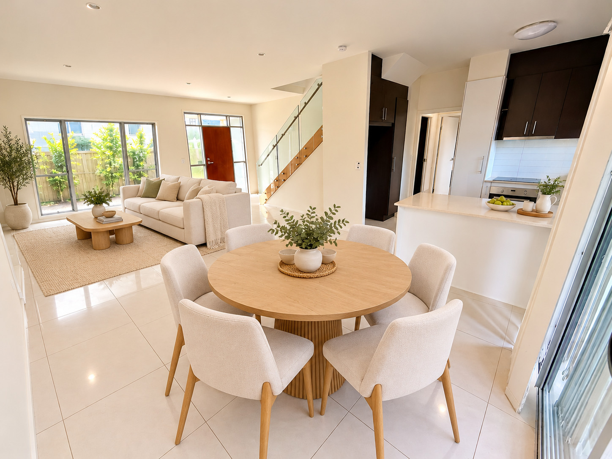
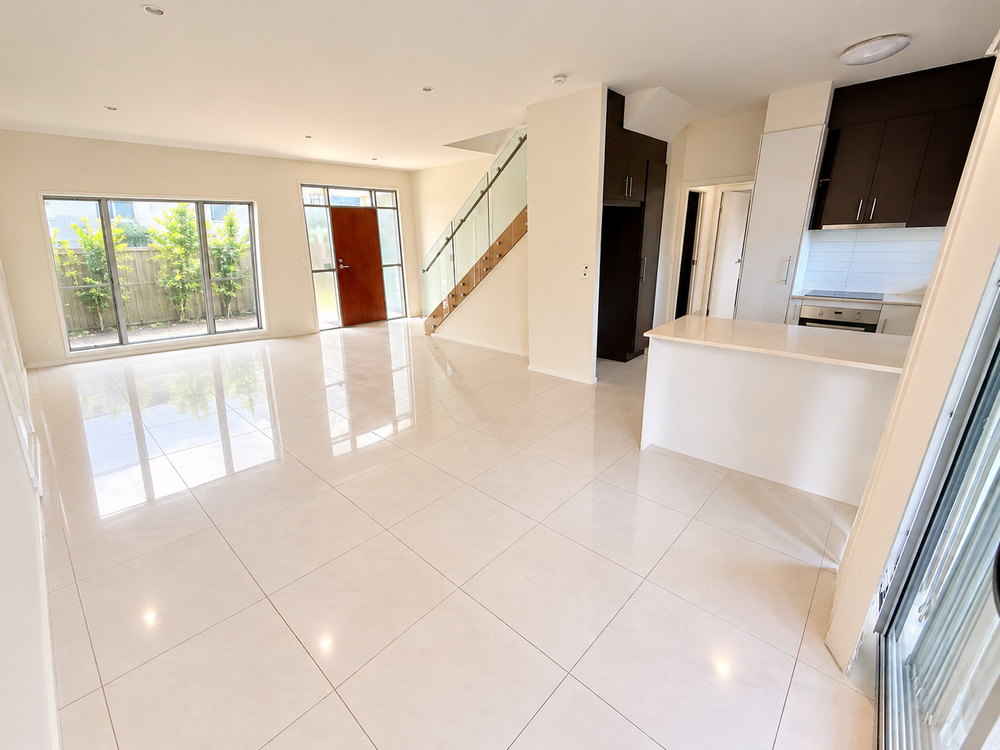

MORNINGSIDE · INTERACTIVE HOME VIEWING
Imagine your living & dining space.
Slide to see how thoughtful furniture styling can bring this open-plan space to life.


BEFORE · EMPTY
AFTER · STAGED
↔ Drag the circle left or right, or tap a button to switch views.
Virtual staging notice: Images are digitally edited and AI-generated for illustrative purposes only. The “Before” image has been digitally cleared, and the “After” image includes virtual furnishings. They are not unaltered photographs. Furniture and accessories are not included in the sale. Layout, dimensions, finishes and external views should be independently verified against the property during inspection. Digital rendering may not precisely reproduce every physical detail.